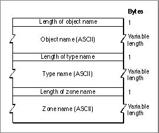
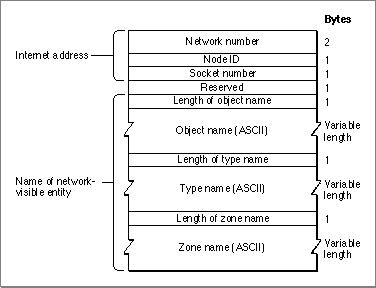

Handling Names Table Entry Requests
In addition to providing services that let you register an entity name and socket address for your process, NBP lets you look up addresses of other entities based on a name, confirm that a process whose entity name and address you already have is still registered with NBP and that the address is correct, remove your process's name and address from the names table when you no longer want to make the entity available, and cancel a pending request. You use
- the
NBPSetEntityprocedure to prepare an entity name in the format required by the NBP functions- the
PLookupNamefunction to retrieve another entity's address based on the entity's complete NBP name, or to retrieve the addresses of multiple entities that match an NBP name that includes wildcards- the
NBPExtractfunction to read a retrieved address from the return buffer- the
PConfirmNamefunction to verify a name and address- the
PRemoveNamefunction to remove your process's name and address from the
NBP names directory- the
PKillNBPfunction to cancel a request to register, confirm, or look up a names table entry if the function was called asynchronously and it has not already been executedPreparing an Entity Name
To prepare an entity name usingNBPSetEntity, you allocate a buffer that is at least
99 bytes long. You can allocate a record of typeEntityNamefor this buffer. You passNBPSetEntitya pointer to the buffer along with the three parts of the name (object, type, and zone), andNBPSetEntitywrites the entity name to the buffer in the
format that thePLookupName,PConfirmName, andPRemoveNamefunctions require.
Figure 3-5 shows the format of the entity name record.Figure 3-5 Entity name record format

For the
PConfirmNameandPRemoveNamefunctions, you must specify explicit values for thenbpObject,nbpType, andnbpZoneparameters. However, you can specify wildcards for these parameters forPLookupName.Looking Up a Name
You can use thePLookupNamefunction to look up the address of a particular entity whose NBP name you know. You can also use thePLookupNamefunction to find the addresses of more than one entity whose NBP names match a partial name that includes wildcards.If you want to retrieve the address of a particular entity, you assign to the
entityPtrfield of the parameter block a pointer to a fully qualified entity name that you provided usingNBPSetEntity. You create a buffer to hold the name and address thatPLookupNamereturns and set the parameter block's return buffer pointer (retBuffPtr) field to this buffer's pointer. Because the data is packed and each tuple takes a maximum of 104 bytes, to look up a particular name you need to set the return buffer size (retBuffSize) field to the buffer size of 104 bytes. Figure 3-6 shows the format of
the record for a tuple thatPLookupNamereturns.Figure 3-6 Tuple returned by the
PLookupNamefunction
If you want only one name and address pair returned, you set the maximum number of matches (
maxToGet) field to 1. When you call the function asynchronously, you must assign to theioCompletionfield a pointer to your completion routine or set this field toNIL. For more information about executing routines synchronously or asynchro-
nously, see the chapter "Introduction to AppleTalk" in this book.If you want to obtain the addresses of other instances of the same type of entity that are running on other nodes in the network, you can look up the addresses of these entities by specifying wildcards. In this case, you specify a type field value and wildcards for the object and zone fields.
Table 3-1 shows the wildcards that you can use to control the kind of matches that you want NBP to return.
For example, if you want to retrieve the names and addresses of all the mailboxes in the same zone as one in which your process is running, you can set the entity name object field to the equal sign (=), the type field to
Mailbox, and the zone field to the asterisk (*). ThePLookupNamefunction will return the entity names and internet addresses of all mailboxes in that zone excluding your own entity's name and address.You can specify how thorough the lookup should be by defining the number of times that NBP should broadcast the lookup packets and the time interval between these retries. To do this, you assign values to the parameter block's
countandintervalfields. See the discussion on how to determine these values in the section "Registering a Names Table Entry" beginning on page 3-8.You must also create a buffer large enough to hold all of the tuples for the matches that NBP returns. (See Listing 3-3 on page 3-15.) You assign the buffer's pointer to the parameter block's
retBuffPtrfield and the buffer's size in bytes to theretBuffSizefield. Allow 104 bytes for each match. You set the maximum number of matches for NBP to return as the value of themaxToGetfield.The
PLookupNamefunction keeps track of the number of matches it writes to the return buffer each time it receives a returned packet containing one or more matches, and it updates the number of matches returned (numGotten) field after it returns each match. BecausePLookupNamemaintainsnumGotten, you can start reading the names and addresses in the buffer and storing them or displaying them for the user before the function completes execution.A single lookup request or retry can return more than one match in a reply packet. When this happens, the
PLookupNamefunction will return as many of the matches that the packet contains as will fit in the buffer. In cases such as this, you will find that the number of tuples thatPLookupNamewrites to the return buffer may exceed the maximum number of matches to be returned as specified bymaxToGet. When this occurs you can assume that there may be additional matches that did not fit in the buffer or additional reply packets containing matches thatPLookupNamedid not process. To receive all the matches, you should increase the size of the buffer and themaxToGetnumber, and call thePLookupNamefunction again.If the buffer is too small to accommodate all of the returned matches in a packet,
thePLookupNamefunction returns a function result ofnbpBuffOvr. In any case,
thenumGottenfield always indicates the actual number of tuples returned in the
buffer. (See also "PLookupName" beginning on page 3-28 for more information
about this function.)The code in Listing 3-2 assigns values to the fields of the parameter block to be used for the
PLookupNamefunction call. The valuetheEntitypoints to a packed entity-name record that you prepared usingNBPSetEntity. This is the name that will be looked
for. The valuereturnBufferPtrpoints to the buffer wherePLookupNamewill return
any matches that it finds. The buffer must be able to hold the number of matches specified by the input value ofentityCount; each match is 104 bytes long. On return,entityCountcontains the number of matches that thePLookupNamefunction found and returned in the buffer pointed to by returnBufferPtr. ThePLookupNamefunction's glue code in the MPW interface fills in the values for theioRefNumandcsCodefields.Listing 3-2 Calling
PLookupNameto find matches for an entity nameFUNCTION MyLookupName (theEntity: EntityName; VAR entityCount: Integer; returnBufferPtr: Ptr): OSErr; CONST kTupleSize = 104; {sizeof(AddrBlock) + a one-byte enumerator + } { sizeof(EntityName)} VAR mppPB: MPPParamBlock; BEGIN WITH mppPB DO BEGIN interval := $0F; {reasonable values for the } count := $03; { interval and retry count} entityPtr := @theEntity; {pointer to the entity name to } { look for} retBuffPtr := returnBufferPtr; {pointer to the buffer for the } { tuples} RetBuffSize := entityCount * kTupleSize; {return buffer size} maxToGet := entityCount; {the number of entities that the } { return buffer can hold} END; MyLookupName := PLookupName(@mppPB, FALSE); {look up the entity name} entityCount := mppPB.numGotten; {return the number of matches found} END;The tuples in the buffer are in the format used in the NBP names table, as shown in Figure 3-6 on page 3-12. Because data is packed, the object, type, and zone names in this format are of arbitrary length; you cannot use Pascal to read these tuples. You can use theNBPExtractfunction to read tuples from the buffer.Extracting a Name From a List of Returned Names
After NBP returns the matches to your buffer, you need to extract the match or matches that you want to use. You can use theNBPExtractfunction to read a name and address pair from the return buffer that you supplied toPLookupName. Before you callNBPExtract, you need to allocate memory for two buffers: one buffer that is at least
102 bytes long to hold the name part of the tuple and another buffer that is 4 bytes long to hold the address. You pass theNBPExtractfunction pointers to these buffers. TheNBPExtractfunction unpacks the name and address data and writes it to the buffers
that you supply.You also pass
NBPExtracta pointer to the buffer containing the returned tuples; this is the pointer that you assigned to thePLookupNamefunction'sretBuffPtrparameter block field. For thenumInBufparameter, you specify the number of tuples in the return buffer; this is the value that thePLookupNamefunction returned in thenumGottenparameter block field. Counting the first returned tuple as one and following in sequence to the value ofnumGotten, you identify which name and address pair you want to extract as the value of thewhichOneparameter. You can use theNBPExtractfunction in a loop that varies the value of thewhichOneparameter (entityCountin the following code example) from 1 to the total number of tuples in the list to extract all the names in the list.Listing 3-3 shows an application-defined procedure,
DoMyLookupName, that allocates a buffer to hold the matches that thePLookupNamefunction returns; theMyLookupNamefunction, shown in Listing 3-2 on page 3-13, calls thePLookupNamefunction. TheDoMyLookupNameprocedure calls theMyLookupNamefunction.If the
MyLookupNamefunction returns a result code ofnoErr, then the code calls theNBPExtractfunction to read the matches that are in the buffer and write them to
the application's buffer with an application-defined routine,MyAddToMatchList; the listing does not show theMyAddToMatchListroutine. After the matches are extracted, the code disposes of the return buffer.Listing 3-3 Creating a buffer to hold name matches found, then using
NBPExtractto read the matchesPROCEDURE DoMyLookupName; CONST kTupleSize = 104; {sizeof(AddrBlock) + a one-byte enumerator + } { sizeof(EntityName)} kMaxMatches = 100; {number of matches to get} VAR result: OSErr; returnBufferPtr: Ptr; theEntity: EntityName; entityCount: Integer; index: Integer; entityAddress: AddrBlock; BEGIN returnBufferPtr := NewPtr(kMaxMatches * LongInt(kTupleSize)); IF returnBufferPtr <> NIL THEN BEGIN {Create a packed entity name.} NBPSetEntity(@theEntity, '=', 'AFPServer', '*'); entityCount := kMaxMatches; {maximum number of matches we want} result := MyLookupName(theEntity, entityCount, returnBufferPtr); IF result = noErr THEN {Extract the matches and add them to the match list.} FOR index := 1 TO entityCount DO IF NBPExtract(returnBufferPtr, entityCount, index, theEntity, entityAddress) = noErr THEN AddToMatchList(theEntity, entityAddress) DiposPtr(returnBufferPtr); {release the memory} END; END;Confirming a Name
If you know the name and address of an entity, and you only want to confirm that the tuple is still registered with NBP and that the address hasn't been changed, you should call thePConfirmNamefunction instead of callingPLookupName.The
PConfirmNamefunction is faster thanPLookupNamebecause NBP can send a request packet directly to the node based on the address that you supply rather than having to broadcast lookup packets throughout the network to locate the names table entry based on the entity name alone.The code in Listing 3-4 sets up the parameter block to be used for the
PConfirmNamefunction and callsPConfirmNameto verify that the name and address still exist, and that the address is unchanged. If the application is using a different socket,PConfirmNamereturns a function result ofnbpConfDiffand gives the new
socket number in the parameter block'snewSocket field.Listing 3-4 Confirming an existing NBP name and address
FUNCTION MyConfirmName (theEntity: EntityName; entityAddress: AddrBlock; VAR socket: Integer): OSErr; VAR mppPB: MPPParamBlock; BEGIN WITH mppPB DO BEGIN interval := $0F; {reasonable values for the interval } count := $03; { and retry count} entityPtr := @theEntity; {entity name to look for} confirmAddr := entityAddress; {entity's network address} END; MyConfirmName := PConfirmName(@mppPB, FALSE); socket := mppPB.newSocket; {return the socket number, which is } { the new socket number if } { PConfirmName's result is } { nbpConfDiff} END;Removing an Entry From the Names Table
After you close the socket that your process uses or when you no longer want to make the process available throughout the network, you remove the names table entry from the node on which it resides using thePRemoveNamefunction.There are two ways to remove a names table entry:
The
- For the first method, you use the
NBPSetEntityprocedure to put the entity name of an existing registered entity into the structure that NBP requires. Then you specify the pointer to this record as the value of theentityPtrfield of the parameter block.- For the second method, you provide the
PRemoveNamefunction with a pointer to the names table entry record that you used to register the name.PRemoveName function removes the entry from the node's names table unless the name is no longer registered, in which case,PRemoveNamereturns a function result ofnbpNotFound. An entity name may not be included in the node's names table if, for example, the request to register the name had been canceled by thePKillNBPfunction before thePRegisterNamefunction used to register the name was executed.The code in Listing 3-5 shows how to remove a names table entry using
PRemoveName. ThePRemoveNamefunction's glue code fills in theioRefNumandcsCodevalues. The code in Listing 3-5 provides the pointer to the names table entry record that was used to register the name; it assigns this value to theentityPtrfield of the parameter block used for thePRemoveNamefunction call. (The code in Listing 3-1 on page 3-10 created the names table entry record.) If the application-definedMyRemoveNamefunction returns a function result ofnoErr, the code disposes of the memory block pointed to byntePtr.Listing 3-5 Removing an NBP names table entry
FUNCTION MyRemoveName (ntePtr: Ptr): OSErr; VAR mppPB: MPPParamBlock; result: OSErr; BEGIN mppPB.entityPtr := Ptr(ORD4(ntePtr) + 9); {the entity name is at offset 9 in the NTE} result := PRemoveName(@mppPB, FALSE);{remove the name} IF (result = noErr) THEN DisposPtr(ntePtr); {release the memory} MyRemoveName := result; END;Canceling a Request
You can use thePKillNBPfunction to cancel a request to register, look up, or confirm
a names table entry if the function was called asynchronously and it has not already been executed.When you call
PRegisterName,PLookupName, orPConfirmName, NBP calls the Device Manager, which places your request in the .MPP driver queue with other requests waiting to be executed. To queue the request, the Device Manager places
a pointer to the function's parameter block in the .MPP driver queue. You assign this pointer to thePKillNPBparameter block's queue element (nKillQEl) field.If the function request that you want to cancel is not in the queue,
PKillNBPreturns
a function result ofcbNotFound. IfPKillNBPcancels the function, it returns a
function result ofnoErr, and the function that it canceled returns a function result
ofreqAborted.The code in Listing 3-6 on page 3-18 shows how to cancel a
PRegisterName,PLookupName, orPConfirmNamefunction call. The application-definedMyKillNBPfunction takes as an input parameter a pointer to the parameter block that was used
to make thePLookupName,PRegisterName, orPConfirmNamefunction call to be canceled. The code assigns this pointer to thenKillQElfield of the parameter block to be passed to thePKillNBPfunction. TheioRefNumandcsCodefield values are filled in by thePKillNBPfunction's glue code in the MPW interface.Listing 3-6 Canceling a request to look up a name
FUNCTION MyKillNBP (requestPBPtr: MPPPBptr): OSErr; VAR mppPB: MPPParamBlock; BEGIN mppPB.nKillQEl := Ptr(requestPBPtr); MyKillNBP := PKillNBP(@mppPB, FALSE); END;